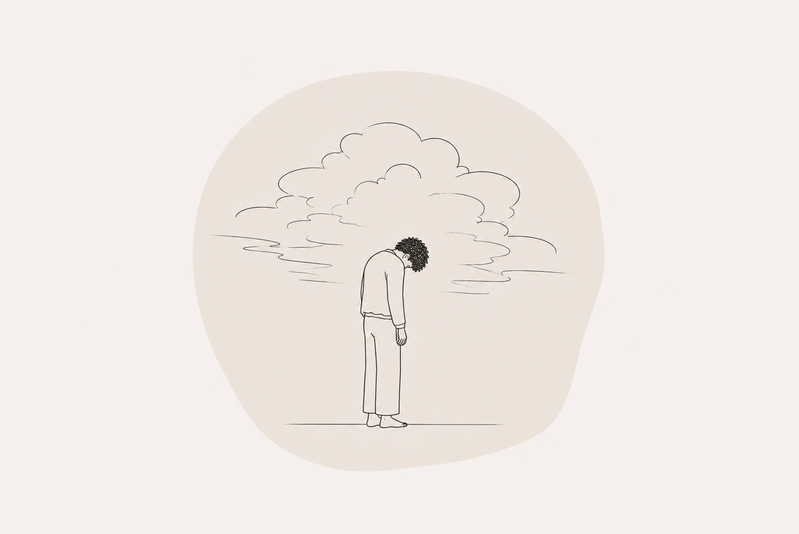

ROUW

Rouw is een natuurlijke reactie op verlies, maar heeft niet alleen invloed op onze emoties. Het kan ook ons zenuwstelsel, onze relaties en zelfs de manier waarop we ons eigen lichaam ervaren beïnvloeden. Rouw kent geen vaste tijdlijn en verandert vaak door de tijd heen.
Misschien herken je:
- Golven van verdriet, boosheid of schuldgevoel
- Je losgekoppeld voelen van jezelf of anderen
- Moeite met slapen
- Een beklemmend gevoel op de borst of in de keel
- Vermoeidheid of verlies van motivatie
- Moeite met concentreren of dingen onthouden
In onze sessies creëren we ruimte voor rouw, zonder te proberen het te haasten of op te lossen. Samen onderzoeken we hoe je verlies zich zowel in je lichaam als in je dagelijks leven laat zien. We zoeken naar manieren om je verlies te leren dragen, terwijl je opnieuw verbinding maakt met jezelf.
AFSPRAAK MAKEN →